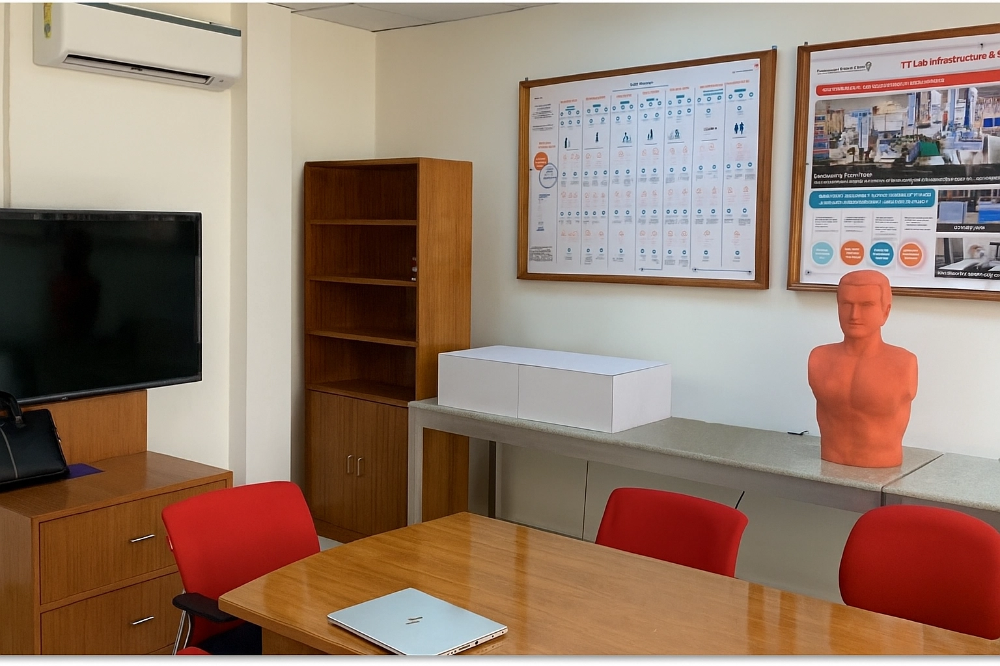

Technical Infrastructure
of ECSTRA

Innovation is about connecting the dots.
A SHIFT innovation ecosystem refers to collaborative networks focused on driving innovation, often using mission-led approaches to address complex challenges in areas like urbanism or healthcare, by connecting diverse resources and ideas to create new solutions. These ecosystems shift from traditional approaches to integrated platforms that foster systemic collaboration, experimentation and open innovation to generate transformative value and impact on a larger scale.
Purpose
To serve as a digital space for fostering innovation and creativity, accelerating the development of new ideas and solutions in healthcare.
Focus
Driven by the "New Ambition" and committed to sustainability and improving access to care.
Methods
SHIFT utilizes open innovation methods such as challenges, events hackathons, incubation programmes.
Startups
Universities/Institutes
Healthcare Providers
Industry Partners
Students
Healthcare Professionals
How we work ?
The Digital Ecosystem provides the technological foundation for data-driven insights and services, while SHIFT acts as the catalyst for external ideas and collaborations that can then be integrated into the digital platform to drive innovation for healthcare providers worldwide.
Way to SHIFT Innovation Lab
Interactive map with key attractions and tour meeting points